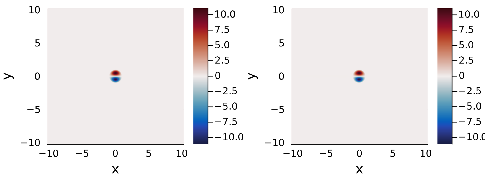

Examples
Here we present some examples which demonstrate how to use this package. Further examples are available in the examples/ directory here.
Getting Started
The first step is to create a new project (also known as an environment) and install Julia. We can do this by opening Julia with the current directory enabled using
julia --project=.Further information on working with environments can be found here.
We can now install QGDipoles.jl to this project using the instructions on the Installation page. It is strongly recommended to install QGDipoles.jl and all other packages required for a particular project to a new environment for that project.
To run the examples on this page we'll also need Plots.jl which can be installed using
import Pkg
Pkg.add("Plots")
Pkg.instantiate()One of the examples below also requires GeophysicalFlows.jl which can be installed in the same way.
We can now follow the examples below or copy the examples/ directory to our current working directory using
using QGDipoles
cp(joinpath(pkgdir(QGDipoles), "examples"), "examples")Example: Vortex Structures
The recommended way to use QGDipoles.jl for new users is to create vortex structures. Let's create a single-layer QG vortex with unit radius and velocity $ℓ = U = 1$ and impose a background rotation gradient of $β = 1$. We'll start by creating a grid by specifying the number of gridpoints (Nx, Ny) and the domain size (Lx, Ly)
using QGDipoles, Plots
grid = CreateGrid(; Nx = 512, Ny = 512, Lx = 10, Ly = 10)GridStruct
├────────────────────── device: CPU
├─────────────── size (Lx, Ly): (10.0, 10.0)
├───────── resolution (Nx, Ny): (512, 512)
├─────── grid spacing (Δx, Δy): (0.01953125, 0.01953125)
└────────────────────── domain: x ∈ [-5.0, 4.98046875]
y ∈ [-5.0, 4.98046875]We can now use this grid to create our vortex
vortex = DefLQGVortex(grid; U = 1, ℓ = 1, β = 1)LQGVortex
├─ params structure (LQGParams): varname.params
├─────────────────────── device: CPU
├──────── use analytic solution: false
├────────── contains ψ, q and K: true
├─────────────────── contains a: true
├────────── contains velocities: false
├─────────── contains vorticity: false
├──────────── contains energies: false
└─────────── contains enstrophy: falseThis function call may take a few seconds as Julia functions are compiled before they're used for the first time. Subsequent calls of the same function will be much faster. Vortex parameters are passed as keyword arguments, the full list of keyword arguments available for each function can be found on the List of Functions page. Strictly, we don't need to include ℓ and U here as 1 is the default for these keywords. Our vortex solution can be plotted as a heatmap using
heatmap(grid, vortex.ψ)We can now modify our vortex by including a finite Rossby radius of deformation (corresponding to the equivalent barotropic model) given by R = 1
vortex = UpdateVortex(grid, vortex; R = 1)LQGVortex
├─ params structure (LQGParams): varname.params
├─────────────────────── device: CPU
├──────── use analytic solution: false
├────────── contains ψ, q and K: true
├─────────────────── contains a: true
├────────── contains velocities: false
├─────────── contains vorticity: false
├──────────── contains energies: false
└─────────── contains enstrophy: falseAll other parameters remain unchanged and can be checked using
vortex.paramsLQGParams
├───────── number of layers (N): 1
├───────────── vortex speed (U): 1
├──────────── vortex radius (ℓ): 1
├──────────── Rossby radius (R): 1
├───────── PV gradient in y (β): 1
├─ active layers (ActiveLayers): 1
├───────────── layer depths (H): 1
├───────── vortex position (x₀): [0, 0]
├───────────── vortex angle (α): 0
├─── number of coefficients (M): 8
├──────── error tolerance (tol): 1.0e-6
├──── guess for eigenvalue (K₀): nothing
├── guess for coeffs (a₀) given: false
├──────── use analytic solution: false
├─────────── calculate velocity: false
├────────── calculate vorticity: false
├───────────── calculate energy: false
└────────── calculate enstrophy: falseWe can construct two-layer QG vortices and SQG vortices using the same approach
vortex_LQG = DefLQGVortex(grid; R = [1, 1], β = [1, 0])
vortex_SQG = DefSQGVortex(grid)We can plot layers from multi-layer vortices using the layer keyword in heatmap.
By default, the streamfunction, ψ, and potential vorticity anomaly, q, are calculated for layered QG solutions while the surface streamfunction ψ, and surface buoyancy, b, are calculated for SQG solutions. We can calculate additional quantities, such as the velocity and energy, by setting the relevant keywords to true. Here we plot the velocity components for an SQG vortex and display the associated (domain-integrated) energy
vortex = DefSQGVortex(grid; CalcVelocity = true, CalcEnergy = true)
plot(heatmap(grid, vortex.u, colorlimits=(-10, 10)), heatmap(grid, vortex.v))println(vortex.E)[9.740483372104853]Example: High-Level Functions
Instead of working with structures, we can also calculate vortrex solutions directly as arrays using both high-level and low-level functions. The high-level functions are wrappers for the low-level functionality and allow us to easily calculate solutions without having to uderstand the underlying linear algebra method.
Let's start with the LQG case, define some parameters and create the grid
using QGDipoles
# Set problem parameters
R = [1, 1] # Rossby radius in each layer
β = [0, 1] # background PV gradient in each layer
# create grid
Nx, Ny = 512, 512
Lx, Ly = 10, 10
grid = CreateGrid(Nx, Ny, Lx, Ly)Now we have our parameters and grid, we can get our vortex solution with a single function call
# create modon solution
ψ, q, K, a = CreateModonLQG(grid; R, β)The SQG wrapper is similar. We start by defining some paramters
# Set problem parameters
M = 20 # number of coefficients in Zernike expansion
K₀ = 8 # guess for K
# create grid
Nx, Ny = 512, 512
Lx, Ly = 10, 10
grid = CreateGrid(Nx, Ny, Lx, Ly)Note that we've set $K_0 = 8$ this time. We'll see what happens when we create and plot our solution:
# create modon solution
ψ, b, K, a = CreateModonSQG(grid; M, K₀)
K1×1 Matrix{Float64}:
7.342054873133779using Plots
heatmap(grid, ψ)The parameter $K$ is an eigenvalue in the underlying linear algebra problem. There are a (countably) infinite set of vortex solutions and the value of $K$ can be thought of as a radial wavenumber, with larger values of $K$ corresponding to solutions with more complex radial structure. The solutions we normally think of as dipolar vortices are the lowest order mode and higher modes are generally unstable[1]. For both the LQG and SQG cases, the lowest order mode typically has a value of $K \approx 4$ and by default the method looks for solutions with $K \approx 4$. Setting K_0 allows us to specify the approximate value of $K$ we want for our solution. If we look at $K$, we find that $K = 7.34205...$ and if we look at our plot, we see that it's a solution with a mode 2 structure in the radial direction.
In addition to these wrapper functions, the functions CreateLCD and CreateLRD implement the Lamb-Chaplygin dipole[2] and Larichev-Reznik dipole[3] directly using the analytical solution for these cases.
Example: Low-Level Functions
Low-level functions are also available to calculate vortex solutions. In general, these allow more customisation than the high-level wrapper and vortex structures however some understanding of the underlying method is required to work with them effectively. Information on the methodology is given on the Methodology page and in the associated references.
Here we'll construct three different solutions using the low-level functions, namely a 1-Layer Dipole, a 3-Layer Vortex and an SQG Vortex.
We support grid calculations on NVIDIA GPUs using the CUDA package. To use this functionality, pass cuda = true to the grid constructor. For example,
grid = CreateGrid(Nx, Ny, Lx, Ly; cuda = true)1-Layer Dipole
Let's calculate and plot the Larichev-Reznik dipole (LRD). This diople exists on the $\beta$-plane in the equivalent barotropic model so we take $\beta = R = 1$ and consider a 1-layer solution ($N = 1$). We'll also assume unit radius and velocity, $\ell = U = 1$. Let's start by loading the package and defining some parameters
using QGDipoles, Plots
# Set problem parameters
U, ℓ = 1, 1 # vortex speed and radius
R = 1 # Rossby radius in each layer
β = 1 # background PV gradient in each layer
M = 8 # number of coefficients in Zernike expansion
tol = 1e-8 # maximum error in solution evaluation
# Set grid parameters
Nx, Ny = 512, 512
Lx, Ly = 10, 10We've taken $M = 8$ as this is generally a sufficient number of terms to get a relative error $< 10^{-6}$ in the final result. The tolerance, tol, is used in calculating the terms in the linear system and a value of tol=10^{-8} corresponds to approximately the same error as our chosen $M$ value. Here, we build a grid with $512$ points in each direction and take the grid size to be $10$ in each direction. We should always ensure that the grid size is sufficient to capture the far-field decay of the vortex in order to get accurate solutions. We can now build the linear system and solve for the coefficients as follows
# Build and solve linear system for coefficients
λ = ℓ / R
μ = β * ℓ^2/U
A, B, c, d = BuildLinSysLQG(M, λ, μ; tol)
K, a = SolveInhomEVP(A, B, c, d; K₀ = 4, tol)The intermediate parameters, $\lambda$ and $\mu$, describe the rescaled vortex radius and PV gradient. Finally, we can define a grid and evaluate our streamfunction, PV and velocities using
# Create grid and calculate streamfunction, vorticity and velocities
grid = CreateGrid(Nx, Ny, Lx, Ly)
ψ, q = Calc_ψq(grid, a; U, ℓ, R, β)
u, v = Calc_uv(grid, ψ)Our solution can now be plotted
heatmap(grid, ψ)3-Layer Vortex
This example considers a 3-layer solution and introduces the concept of active and passive layers. We define an active layer to be a layer with a closed streamline at $x^2 + y^2 = \ell^2$ whereas a passive layer has no closed streamlines. Therefore, fluid within the vortex in an active layer remains trapped in the vortex. Conversely, fluid in the passive layer is not trapped in a vortex core but can still be affected through the change in layer thickness associated with the streamfunction in neighbouring layers. Passive layers have $F_i(z) = (\beta_i/U) z$ everywhere and hence have no eigenvalue, $K_i$, to solve for. Further, the coefficients within a passive layer are zero though the solution may still be non-zero due to the coefficients in neighbouring layers. Therefore, the corresponding linear system can be simplified by removing rows and columns corresponding to passive layers and solving the reduced system for the active layers only.
We'll start by defining some parameters
using QGDipoles
# Set problem parameters
U, ℓ = 1, 1 # vortex speed and radius
R = [1, 1, 1] # Rossby radius in each layer
β = [0, 0, 1] # background PV gradient in each layer
ActiveLayers = [0, 1, 0] # 1 => layer contains vortex region
x₀ = [5, 5] # location of vortex center
M = 8 # number of coefficients in Zernike expansion
tol = 1e-8 # maximum error in solution evaluation
# Set grid parameters
Nx, Ny = 512, 512
Lx, Ly = [0, 10], [0, 10]Here we've assumed that only the middle layer is active. Therefore our solution will describe a mid-depth propagating structure. We've also taken a background PV gradient in the lower layer only, to represent a PV gradient due to a topographic slope. Finally, we've taken our vortex to be centred at $[5, 5]$ and taken $x$ and $y$ to run from $0$ to $10$.
We start by building the full linear system
# Build and solve linear system for coefficients
λ = ℓ ./ R
μ = β * ℓ^2/U
A, B, c, d = BuildLinSysLQG(M, λ, μ; tol)Next we remove the passive layers
A, B, c, d = ApplyPassiveLayers(A, B, c, d, ActiveLayers)We can now solve the reduced system and put the passive layers, which have $(K, \textbf{a}) = (0, \textbf{0})$, back in to ensure the sizes of $K$ and $\textbf{a}$ match the number of layers
K, a = SolveInhomEVP(A, B, c, d; K₀ = 4, tol)
K, a = IncludePassiveLayers(K, a, ActiveLayers)Finally, we can calculate our solution
# Create grid and calculate streamfunctions and vorticities
grid = CreateGrid(Nx, Ny, Lx, Ly)
ψ, q = Calc_ψq(grid, a; U, ℓ, R, β, x₀)SQG Vortex
This example covers the SQG vortex and a few low-level solver options. The SQG problem requires a few changes to solver options, which we discuss below.
Start by setting parameters for the SQG vortex and grid, similar to previous examples:
using QGDipoles
# Set problem parameters
U, ℓ = 1, 1 # vortex speed and radius
β = 0 # background PV gradient in the interior
# Create grid
Nx, Ny = 512, 512
Lx, Ly = 10, 10
grid = CreateGrid(Nx, Ny, Lx, Ly)Despite the SQG problem having only 1-layer, here we enter R as a 2 element vector since we need both the (reduced) barotropic and baroclinic Rossby radii, $R$ and $R'$. We'll take these as $∞$ and note that all functions accept infinite Rossby radii in both the SQG and LQG cases. However, $R = 0$ is not valid since the QG assumptions break down in this limit.
R = [Inf, Inf] # Baroclinic and Barotropic Rossby radiiThe SQG problem also requires more coefficients to converge to the same accuracy as the LQG problem. Therefore, we take $M = 20$ here.
M = 20 # number of coefficients in Zernike expansionThe need for more coefficients is compensated by the fact that the SQG system is faster to calculate than the LQG system.
We can use two different solution method for solving the SQG eigenvalue problem. These are:
- an eigenvalue method (
method = :eigensolve), - or a root-finding method (
method = :nlsolve).
For the 1-layer LQG and SQG problems, the eigenvalue method will generally be faster (i.e. method = :eigensolve). For multi-layer problems, the root-finding method is always used (i.e. method = :nlsolve) as eigenvalue methods scale poorly with the number of layers. If you have a good initial guess for $K$ and $\textbf{a}$, you may be able to use method = :nlsolve to speed up the calculation in 1-layer LQG and SQG problems. The method flag is passed to the linear system solver, SolveInhomEVP.
We'll use the root-finding method here.
method = :nlsolveNext we can build the linear system
# Build and solve linear system for coefficients
λ = ℓ ./ R
μ = β * ℓ^2/U
A, B, c, d = BuildLinSysSQG(M, λ, μ)
K, a = SolveInhomEVP(A, B, c, d; K₀ = 4, method, m = 1)m is the exponent of K in the eigenvalue problem, $K^m$. The solver, SolveInhomEVP, assumes LQG by default, i.e. m=2. However, for SQG, we should use m=1.
Finally we can create our solution
ψ, b = Calc_ψb(grid, a; U, ℓ, R, β)
u, v = Calc_uv(grid, ψ)Example: GeophysicalFlows.jl
QGDipoles.jl is designed to be compatible with GeophysicalFlows.jl[4] and provide a means of generating dipolar vortex initial conditions for layered QG and surface QG simulations. Here, we'll discuss a simple example of how to setup a 1-layer simulation in GeophyiscalFlows.jl using the Lamb-Chaplygin dipole as the initial condition. We'll also see that, as expected, the dipole retains it's form during the evolution and hence is a steady solution in a co-moving frame. Let's begin by defining some parameters for our vortex initial condition and our numerical simulation
using GeophysicalFlows, QGDipoles, Plots
# Define vortex parameters
U, ℓ = 1, 1
# Set numerical simulation parameters
nx, ny = 1024, 1024
Lx, Ly = 20.48, 20.48
T = 10 # simulation stop time
Δt = 0.01 # timestep
Nt = Int(T/Δt) # number of timesteps
dev = CPU() # device, change to GPU() if you have an Nvidia GPU
stepper = "FilteredRK4"GeophysicalFlows.jl allows simulations to be run on a GPU so we can set dev = GPU() to use this functionality. In this case, QGDipoles.jl will construct vortex solutions as CuArrays using CUDA when given a grid that is stored on a GPU. We can now define our problem using the SingleLayerQG module from GeophysicalFlows.jl. This problem will contain a grid (prob.grid) that can be passed to functions from QGDipoles.jl in the same manner as grids contructed using CreateGrid
# Define problem using SingleLayerQG from GeophysicalFlows.jl
prob = SingleLayerQG.Problem(dev;
nx,
ny,
Lx,
Ly,
U = -U, # background flow so vortex remains stationary
dt = Δt,
stepper)Here, we've used a background flow which moves in the opposite direction to the vortex and with the same magnitude, U. Therefore, we're working in a frame co-moving with the vortex and we expect it to remain centred on the orogin throughout the evolution. Next, we'll use CreateLCD to create a Lamb-Chaplygin dipole and use this as our initial condition.
# Set initial condition
_, q₀ = CreateLCD(prob.grid; U, ℓ)
SingleLayerQG.set_q!(prob, q₀)
# Define Energy as a diagnostic for the simulation
diags = Diagnostic(SingleLayerQG.energy, prob; nsteps=Nt, freq=Int(Nt/100))We've also defined a Diagnostic which will save the domain-averaged energy during the simulation. Finally, we can evolve the simulation in time:
# Evolve system forward in time
stepforward!(prob, diags, Nt)
SingleLayerQG.updatevars!(prob)This step may take a couple of minutes to run on a CPU but will be much faster on a GPU. We can plot our initial condition and solution at $t = 10.0$ using:
plot(heatmap(prob.grid, q₀), heatmap(prob.grid, prob.vars.q))The two plots are shown below and are approximately identical. Therefore, we observe that the vortex remains centred at the origin. Over long times, numerical error will result in the vortex moving at a slightly different speed to U and hence moving away from the origin.

See the GeophyiscalFlows.jl documentation here for more details on how to run QG simulations.
- 1Johnson, E. R., and M. N. Crowe, 2023, Oceanic dipoles in a surface quasigeostrophic model, J. Fluid Mech., 958, R2.
- 2Lamb, H., 1932, Hydrodynamics. Cambridge University Press.
- 3Larichev, V.D. & Reznik, G.M., 1976, Two-dimensional solitary Rossby waves, Dokl. Akad. Nauk SSSR, 12–13.
- 4Constantinou et al., 2021, GeophysicalFlows.jl: Solvers for geophysical fluid dynamics problems in periodic domains on CPUs & GPUs, JOSS, 6(60), 3053.